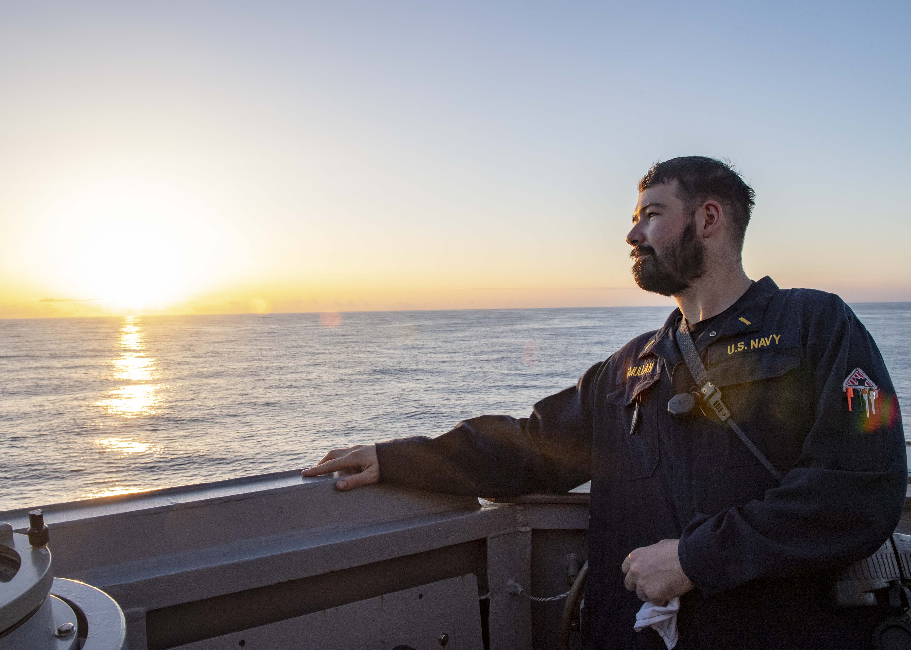

02 | About
Hello, my name is David O'Mullan! Born and raised in the suburbs of Chicago. Alumni of Ohio State where I earned my B.S. in Computer Science & Engineering. I served for four years as a US Naval Officer, stationed out of Yokosuka, Japan and Coronado, California. I am now returning to the world of professional software development.
Most recently I have completed several of the Learn Enough to be Dangerous courses, including Javascript and Rails. Check out my latest work on my personal GitHub page! I am available for freelance and collaborate work or full-time hire.